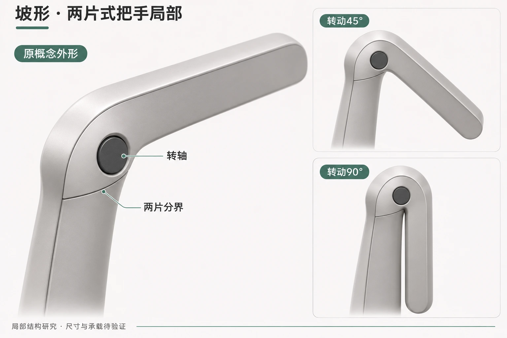

01 / LINEAR
按原图重建 · 外观研究凌序细斜立柱、窄横屏、直扶手。
侧饰板下层长条面左右均为银色镜面；竖放后对应两条完整长边。分区要求已确认，图面效果待评审。
THREE DESIGNS. ONE PERSPECTIVE.
凌序、曜影、坡形。用同一组视角看形态，按方案查看动作状态，最后看点睛的细节。
点开图片，可放大查看
侧饰板下层长条面左右均为银色镜面；竖放后对应两条完整长边。分区要求已确认，图面效果待评审。
同款四图出自同一演示模型。人物为175cm比例人形；图稿及运动均待评审，不作为尺寸、装配或工程验证依据。
先核对动作状态，再操作模型
从静态，进入动作。
可旋转、缩放；凌序与坡形折叠待重做模型暂未载入。
凌序、坡形（大C）的旧折叠存在实体穿插，折叠、播放及竖放已撤下，待重新设计。曜影保留既有操作，仍未通过工程核验。
整机与动作之后，再看细节
防滑斜筋沿用细化稿；硅胶重新处理肩部衔接、轻收曲面及薄端盖。皮革与心率款沿用，新图待评审。
新增修订外观概念，均待评审。尺寸、接口、承载与折叠净距待校核。查看本轮纹理与材质特写 ↗
拐角方向获总体肯定，四种具体处理仍并列待选。
离合片、机底、原抬升架与前方摆动出线，延续同一整机方案。
 进入曜影离合片 3D · 按钮耦合／解耦 ↗旋转查看结构，按下按钮退开齿盘，拖动扶手角度，再松开查看接合；支持剖视与零件展开。沿用既有 R3 模型 · 30齿／12°档距 · 演示行程与承载仍待工程核验
进入曜影离合片 3D · 按钮耦合／解耦 ↗旋转查看结构，按下按钮退开齿盘，拖动扶手角度，再松开查看接合；支持剖视与零件展开。沿用既有 R3 模型 · 30齿／12°档距 · 演示行程与承载仍待工程核验主推深石墨喷砂阳极氧化铝饰板，另有暖银铝与深灰塑料；把手提议固定半片＋活动半片，复用按钮轴向退盘。查看搭配、分件与可操作按钮原理 ↗。新图未改入上方整机模型；既有分区示意留作对照。

旧动作退出当前交付。重新核对固定下梁、活动立柱、上轴与下轴以及全过程扫掠空间后，再制作新机构。
曜影沿用R3的114项源装配，保留20项原抬升件；旧扳机组件6件保持删除。前方单轴摆动出线、离合片、下置电机与饰盖属于修改提议。本轮圆弧低罩和胶囊包覆为网页修订；下载STEP仍为删旧扳机的源装配。30齿的120°锁位与源123°折平端有3°差异，不把折平等同锁定。
凌序根据本轮圈注的银黑整机参考图重建；坡形根据“坡形全域”标注图独立重建。两款尚无经过核对的专用STEP；运动路径、内部机构、尺寸、锁止、行程、干涉与承载均待验证。带人物图用于比例理解。
本轮按新要求整理三款；灵伴及其他旧稿仍保留在历史入口，不将灵伴直接改名为坡形。既有四种凌序接头未获选择，坡形饰板尚未定材质。
凌序本轮圈注原图 · 坡形饰板原图 · 本轮重排前页面与原稿